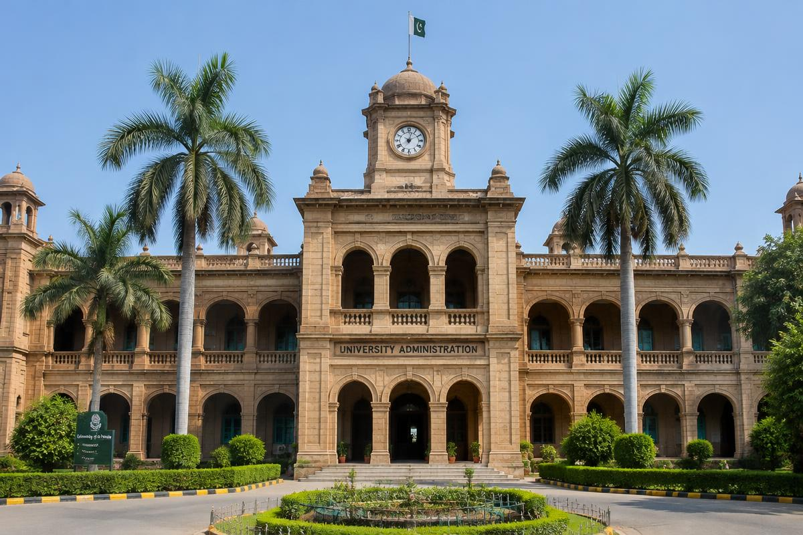
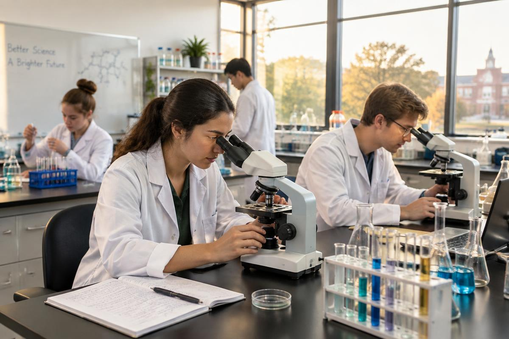
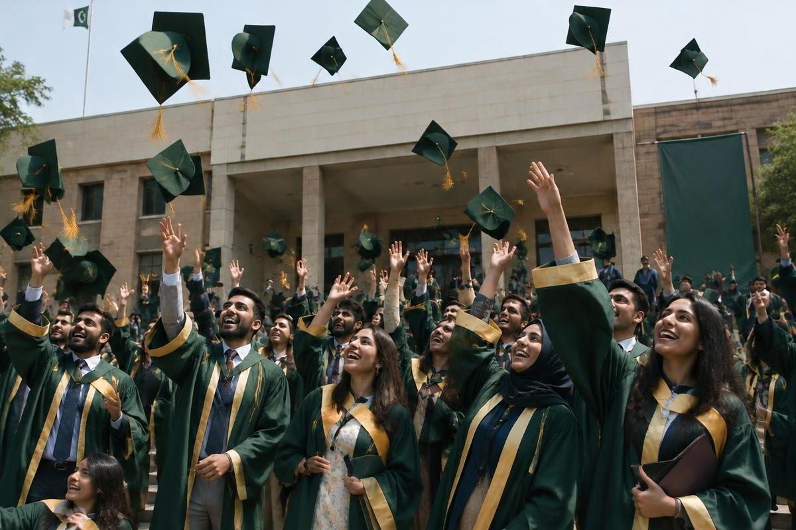

Diamond Jubilee: 75 years of learning — celebrations open across campus
Diamond Jubilee · 1951 – 2026
Seventy-five years of light and learning
علم روشنی ہے — پچھتر سال کا سفر
Pakistan's second-oldest university, on 1,279 acres at Jamshoro.
0Founded
0Acres of campus
0Faculties
0Departments
0Research institutes
0+Faculty members
0+Students
Life on campus



Latest news
Admissions open for undergraduate programmes, academic year 2026–27
Annual examination schedule published by the Controller of Examinations
Frequently asked
When do admissions open?
Undergraduate admissions usually open in summer. Dates are announced on the Admissions page and in national newspapers.
Is there an entry test?
Yes. Most undergraduate programmes require the university's pre-entry test. Merit combines the test score with previous academic results.
Does the university offer hostels?
Yes, separate hostels for male and female students are available on campus, subject to availability.
How do I check my exam result?
Use the results lookup on the Examination page with your seat number, or visit the Controller of Examinations office.
Are scholarships available?
Need-based and merit scholarships are offered through the university, HEC and provincial programmes.